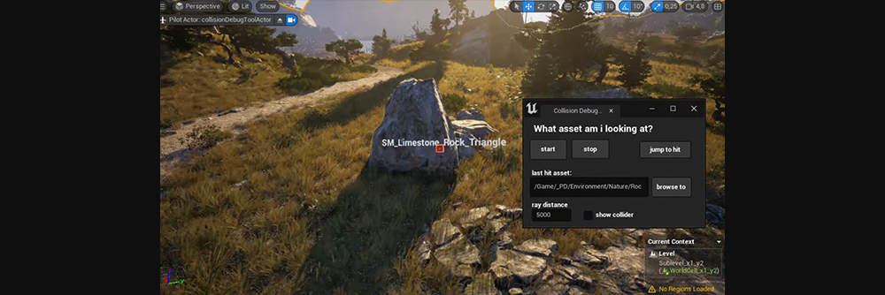
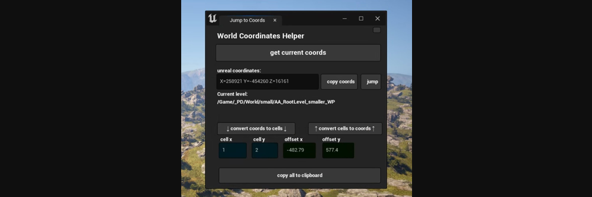
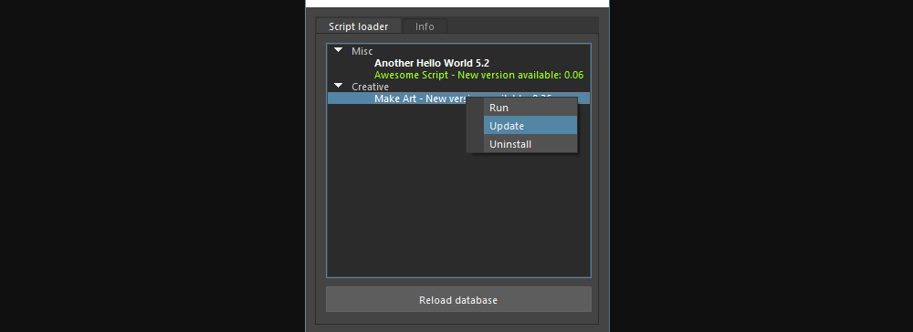
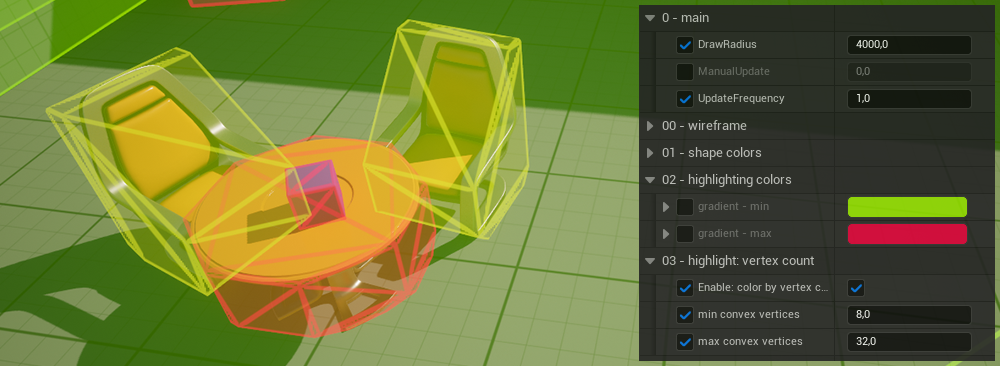

Developer tools
I've developed mostly artist-facing tools and pipeline improvements across Houdini, Unreal, Unity, Maya, Blender, and in-house engines. My work includes automating repetitive tasks, supporting day-to-day workflows, and finding bottlenecks in existing pipelines.
Examples include debugging tools and an HLOD generator for Pax Dei, asset validation and collision-debugging tools for Unreal, and Perforce helpers for Houdini and Maya. I've also built batch-processing utilities for asset optimisation, a Maya script-distribution tool, and a launcher that brings common artist tasks and tools into one place.
I’m interested in making tools useful and understandable, and improving pipelines as a whole so artists can focus on doing their best work.



